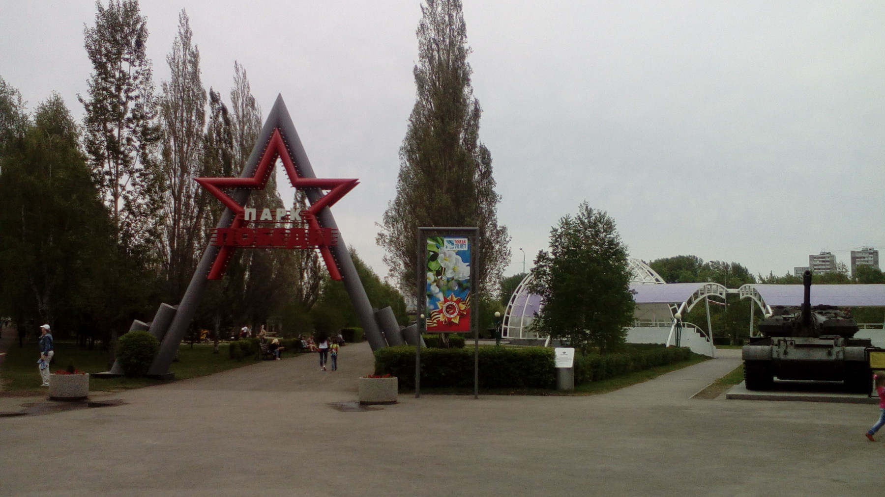

Компания «Билайн», абонентом которой я с некоторых пор являюсь (переключившись с Мегафона), проводит совместно с порталом «Тайга.инфо» тестирование доступа в интернет посредством сотовой сети, а заодно и смартфонов Билайн Про LTE, которые и стоят недорого (5990 рублей), и поддерживают LTE. Напомню, Билайн первым запустил в Кемерове LTE в конце прошлого года.
В рамках тестирования скоростей, объединённого хештегом #sibskorosti, блогеры со всей Сибири будут в течение 10 недель ходить по разным интересным местам в родных городах, измерять скорость мобильного интернета, фиксировать свои пользовательские ощущения и рассказывать, чем собственно интересно это место.
Пост будет обновляться в течение 10 недель.
Неделя первая — парки
Дабы совместить приятное и нужное, мы сели на велосипеды и поехали сегодня в Парк Жукова.
Парк Жукова — относительно молодой парк, разбитый в центре Кемерова на левом берегу Искитимки, между Красноармейской улицей и проспектом Советский. Открыт был году примерно в 2000-м.
Во времена моей учёбы в институте, на пустыре, который занимает этот парк, любили загорать студентки КемГУ (иногда топлесс) :) Сейчас они загорают в неизвестных мне местах (да и я уже постарел).

Теперь в парке нет тех студенток, но есть порядок и много военной техники, по которой любят ползать дети разных возрастов.
Все фотографии сделаны на Билайн Про LTE. Фотки вышли хуже айфоновских, но и стоит телефон в 5 раз дешевле. А на моём айфоне и LTE нет.
Приехав в парк я отправил дочку на детскую площадку, а сам поехал установил SpeedTest и поехал прокатиться по парку на велике, замерить скорость и попробовать посмотреть видео. Телефон показывал буковку H рядом с 3G, кажется, это означает 3,5G.
Центр парка украшает бюст великого маршала в обрамлении цветущих тюльпанов
Берег реки Искитимки ещё лет 15 назад представлял собой грустное зрелище, сам берег скрывался за деревьями и кустарниками, летом вода застаивалась там окончательно. Несколько лет назад городские власти взялись навести порядок, берег основательно почистили, сформировали аккуратное русло. Планов было больше, но деньги, вероятно немного кончились. Несмотря на это сейчас Искитимка выглядит значительно лучше.
Есть и ещё одна интересная штука. По всему парку установлены скамейки, которые именуют солидным термином «парковый диван». В 2013 году чиновники разного уровня решили сделать городу добро и купили на свои личные сбережения такие диваны, которые расставили по всему городу, украсив памятными табличками.
Настала пора замеров скорости. Несмотря на то, что мы находимся в центре города, в месте массового скопления людей, результаты СпидТеста нельзя назвать хорошими. В среднем 5 мегабит из трёх замеров. Индикатор 3G иногда предательски менялся на E.
Неделя 2 — площадь Советов
Прошлое тестирование нельзя признать удачным. Дело в том, что, как выяснилось позже, тестировал интернет я на сим-карте, где не был подключен 4G. Недоразумение было исправлено, на телефоне появился обнадёживающий значок LTE и я поехал на площадь Советов.
На главной площади Кемерова размещены мэрия, администрация области, Почтамт и детский городок.
Стоит отметить, что часть детского городка была подарена несколько лет назад городу именно компанией Билайн.
Центр площади украшает клумба с тюльпанами и памятник вождю мирового пролетариата, Владимиру Ленину. Это единственный на территории СССР памятник в «женском» пальто - пальто застегнутом налево. Кроме этого, интересен тот факт, что в 1992 году местные бизнесмены в антикоммунистическом порыве пытались его снести. Впрочем, безуспешно.
Тестирование интернета можно выразить коротко — «нет слов». Speedtest показывал почти 60 мегабит в секунду. Youtube мгновенно загружал любые ролики, даже не заикаясь о кэшировании. Признаться, я шокирован и обескуражен.
Неделя 3 — университеты
Кемерово не такой студенческий город как, к примеру, Томск, но в целом университетов хватает. Студентов в Кемерове в достатке, обитают они преимущественно в центре и на бульваре Строителей. В центре расположены два университета: Кемеровский государственный университет (универ) и Кузбасский государственный технический университет (политех). Территория обоих это студенческие городки, занимающие территорию, ограниченную несколькими улицами. Студенческий городок КемГУ включает в себя и три общежития: «копейка», «двушка» и «трёшка» (в терминологии конца 90-х, когда мне довелось пожить год в той самой «трёшке»).
Для фотографирования в этот раз я решил использовать айфон, потому что айфон фотографирует лучше.

В целом более комфортное, чем остальные два. Коридоры разделены на «блоки», в каждом блок есть своя душевая.
Во времена моей учёбы являлся заброшенной стройкой. Девушки поговаривали, что там любили бывать эксгибиционисты всяких мастей. Врали, наверное
Какие-нибудь юристы могли месяцами не выходить на улицу, а вот экономистам повезло меньше. Эконом находится метрах в 300 от общежитий. Математикам вовсе не повезло.
Билайн стандартно не удивил. В центре устойчиво работает 4G, видео смотрится, файлы качаются, спидтест показывает 30 мегабит.